かならずお読みください→
ラジコンプラレールの改造
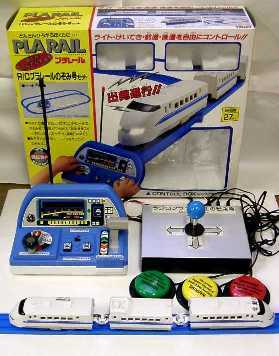
プラレールは株式会社トミーの製品です．
プラレールは，ロングセラーのおもちゃです．発売されたのが１９５９年ですから，かれこれ４０年以上も人気を保っていることになります．とは言っても，この間，全く変化がなかったわけではありません．私が子供の頃に遊んだプラレールは，汽車や貨車，客車は手で押して動かしていましたが，これが今では電池で動きます．またラジコンで無線操作ができる種類もあります．また，組み立て式の線路の種類も実に多様です．プラレールはおそらく日本中のおもちゃやさんでみることができるでしょう．
使用したのは，Ｒ／Ｃプラレールのぞみ号セットです．これは，新幹線のぞみ号３両編成をラジコンを使い，前進／後進／停止と高速／低速の切り替えと，先頭車両の前照灯と警笛の操作ができます．
オリジナルの操作装置は，上の写真のように，おもちゃとしては大変愛らしいデザインなのですが，お身体の状態が思わしくない子供のなかには，操作がほとんど不可能なこともあるのだそうです．
そこでこのおもちゃに対して
前後左右に動くジョイスティックで操作する．
外部スイッチで操作する．
ように改造しました．
材料
三和電子（株）， ジョイスティック（JFL-TM-8），１個，参考価格4200円 直接買えばもっと安い
（購入先，（株）横山商会富山営業所，TEL：076-423-8500）
三和電子（株） 〒173-0034 東京都板橋区幸町２０－１５
TEL：03-3959-6611(代) E-mail;sanwa3@mb.infoweb.ne.jp http://www.sanwa-d.co.jp/（通販あり）
秋葉原の千石電商、アイコー電子などいくつかの店で扱っているらしい．
千石電商は通信販売もしているらしい．
（株）千石電商 千代田区外神田１－８－５ TEL：03-3253-4411
（株）タカチ電機工業，ＹＭ型薄型ボックス（YM200），１個，参考価格1180円
（購入先，マイコンビル無線パーツ富山店）
コネクタ類
ヒロセ電機，プラグ（HR10A-7P-6P），１個，参考単価680円
ヒロセ電機，レセプタクル（HR10A-7R-6S），１個，参考単価320円
補足：これらのコネクタは単に手持ちの部品を使っただけです．要は４本の配線をつなげるコネクタであれば他の種類でもかまいません．
サトーパーツ，ＵＳ型ジャック（PJ-2240-J），５個，参考単価100円
サトーパーツ，US型プラグ（PJ-2240-P），２個，参考価格100円
（以上コネクタ類，購入先，（株）横山商会富山営業所，076-423-8500）
その他電子パーツ店などで入手可能です．
サトーパーツ，スイッチ（SW-100，GS-61A），２個，参考単価400円
オムロン，マイクロリレー（形G5V-1，5V），２個，参考単価230円 （技術資料はここから入手可能）
オムロン，マイクロリレー（形G6EK-134P-US，5V），２個，参考単価296円
（購入先，（株）電陽社富山営業所，TEL：076-432-7588）
電池ボックス，単３四本用，１個，100円位
（購入先，マイコンビル無線パーツ富山店）
その他，ネジ類，汎用基盤，電線など小物部品
工具
ドリル，はんだごて，ハンダ，ドライバ，ヤスリ，テスタなど
作業手順
１ 回路について
回路を理解するために，オリジナルのラジコン発信器を分解してみました．このラジコンには，写真のような回路基盤が入っています．
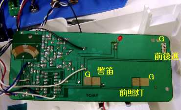視力と時間不足のため回路の全貌を明らかにすることはできませんでした．しかし基本的にはオリジナルのスイッチ部分に外部の回路をつ付加し，オリジナルと同じ一定のルールで開閉すればよいのです．左の写真は，作業後のラジコンの基盤です．配線がすでについています．
前進／後進の切り替えは，左の写真の基盤右上にスライドスイッチがついていて（写真では取り外してあります），ここを閉じれば前進，開けば後進になります．（閉じるとは，つなぐこと．開くとははなすことです）同様に，警笛を鳴らすのも前照灯をつけるのも，隣の接点との間を閉じれば動作します．（写真中のＧはグラウンドを示します）
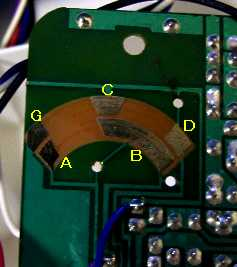停止／低速／高速切り替えは，基盤の左上の部分で行います．停止は，ＡとＧを，低速はＢとＣを，高速はＢとＤを閉じます．オリジナルでは，これらが同時に閉じない機構になっています．（停止と低速と高速のいずれが一つしかできない）
よってこれに付加する回路にも同様の機能が必要と考えられます．（本当に不具合が生じるか，壊れるかはわかりません．実際に試してみようとも思いませんでした）
また，付加した回路の動作とオリジナルのスイッチの動作によってこの条件（停止と低速と高速のいずれが一つしかできない）が満足されないこともあり得ます．そこで，これらの接点をスライドして順次つなぐ金具を取り外しました．（はめ込んであるだけですから，簡単にはずせます）
同様のことが，前進／後進切り替えスイッチにもいえます．上の写真のように，スライドスイッチ自体を取り外しました．これによりオリジナルのラジコンの停止／低速／高速切り替えスイッチと前進／後進スイッチは使えなくなりました．しかし警笛と前照灯スイッチは機能を残しました．
２ ジョイスティックでの操作回路
『ジョイスティックを前に倒せば新幹線は前進し，後ろに倒せば後進し，中立では停止する．左右に倒せば，警笛や前照灯が動作する．ただし必要に応じて，左右の操作と警笛，前照灯の動作の組み合わせが変更できること，さらに必要に応じて，警笛や前照灯を動作しないようにもできること．（右に倒したとき，警笛が動作する，前照灯が動作する，何も動作しないの３種類が選べること．左も同じ）速度の調整を操作者（＝こども）ができる必要は高くない．』との条件で，下の回路を作りました．
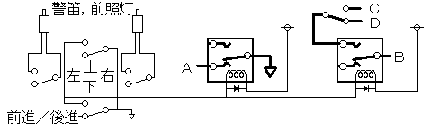
改造に使用する，三和電子（株），ジョイスティック（JFL-TM-8）は，１Ｃタイプのスイッチを４個使ったものですのです．これは左図の左半分が相当します．このうち左右操作のスイッチから図のように配線を取り出し，それぞれＵＳ型プラグをつけます．これらは，別途，ラジコン本体基盤の警笛／前照灯の端子から取り出した配線をつないだＵＳ型ジャックに必要に応じて適宜つなぎます．上下操作のスイッチから図のようにリレー（オムロン形G5V-1）２個へ配線し，さらに上の写真の端子へ接続します．この際，付加回路のグラウンドとラジコンのグラウンドは共通にします．右上のＣとＤを切り替えているスイッチで高速／低速を切り替えます．（リレーのコイル部分のダイオードはなくてもよいようです．）
３ 外部スイッチでの操作回路
『ジェリービーンスイッチなど１Ａ型スイッチで，前進のスイッチを押せば前進し，停止のスイッチを押せば停止し，後進なら後進する．（スイッチをはなしても動き続ける）警笛と前照灯は，スイッチを押している間だけ動作する．』との条件で下の回路を作りました．
電気に自信がないので，２巻線ラッチングリレー（オムロン，形G6EK-134P-US，5V）を使っています．基本的には，上の回路の左半分の前進／後進に関係する部分を置き換えたものです．（警笛や前照灯の部分は，省略してあります．）（注．この回路では，「前進」のあと「後進」を閉じると後進しますが，「後進」のあと「前進」を閉じても後進し続けます．この場合は，一旦「停止」を閉じる必要があります．）
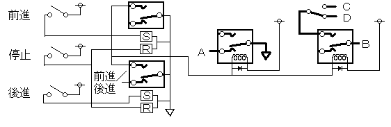
これらを合体して，下の図の回路を作りました．右下の２連スイッチは，操作にジョイスティックを使うか，ジェリービーンスイッチなど外部スイッチを使うかの切り替えスイッチです．
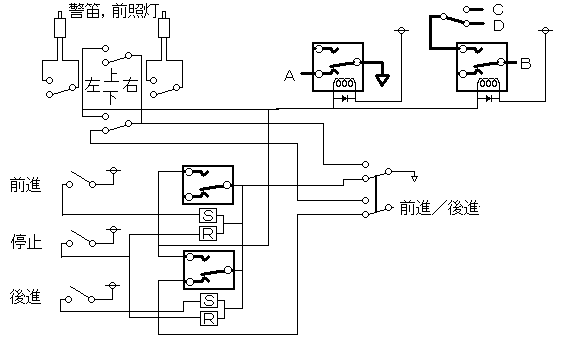
４ 組み立て作業
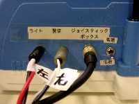左の写真はオリジナルのラジコン背面に取り付けた，コネクターとスイッチです．左から，前照灯，警笛の入力，その他の入力，一番右が高速／低速の切り替えスイッチです．
ジョイスティックを左に倒せば，左の表示があるプラグに，右に倒せば右のプラグに信号が来ます．左右を入れ替えれば，変わります．動作させたくないときには，プラグを差しません．外部スイッチで前照灯や警笛を操作したいときは，ここにつなぎます．３番目の太い黒いケーブルは常につないで使います．
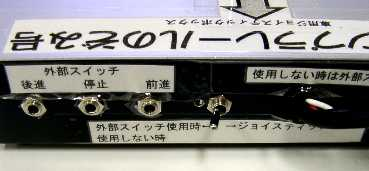右の写真はジョイスティックボックスの背面です．左の３個のジャックには，ジェリービーンスイッチなど外部スイッチをつなぎます．中央右のスイッチは，外部スイッチで操作するときには左に，ジョイスティックで操作するときには右に倒します．
左下の写真は，ジョイスティックボックスの内部です．左下に乾電池，左にリレーが４個，中央上にジョイスティックの裏面，中央右にコネクタとスイッチ関連の配線が見えます．中下と右下の写真は部分拡大したものです．
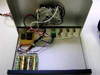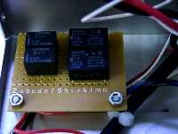
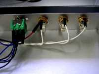
５ 外部スイッチについて
一番上の写真では，ジェリービーンスイッチをつけていますが，一番工夫の必要な部分が外部スイッチです．おもちゃを使う人に合わせて選ぶ必要があり，場合によっては特注品や自分で製作することも必要かもしれません．
今回使用した，サトーパーツ，ＵＳ型ジャック（PJ-2240-J）は，多くの市販スイッチに対応しています．操作スイッチを自作する場合もサトーパーツ，ＵＳ型プラグ（PJ-2240-P）などを使用するとスイッチの使い回しが可能になります．
予測される危険性
このような改造をすると多くの場合，メーカ保証の対象から除外されます．故障しても修理してもらえなくなることを覚悟してください．
特に取り扱いが難しい部品もありませんし，感電するような電圧もありません．ハンダこてでやけどしないように気をつけるくらいでしょう．
何がどうこわれても，おもちゃが動かなくなるだけです．最悪の場合でもかけたお金と時間が無駄になるだけです．
ひとこと
ここで紹介したプラレールは，全国どこでも入手できるおもちゃです．
組み立て式のレールでいろいろな世界（＝路線）を作り出せます．またほかのおもちゃを組み合わせると遊びに変化を付けることもできます．このように遊び方を色々工夫できるよいおもちゃだと思います．とかく飽きやすい子供相手にはこれが大切なことのようです．（もちろん訓練士にとってはあくまでも「訓練」で，その際子供たちが意欲的に取り組んでくれれば，何と考えようがよいことではあります．）
今回ご紹介したような方法は，いろいろなものに応用できると思います．興味をお持ちの方は，トライしてみてください．大切なことは，原理を理解し，それを他の方法で実現することです．
03/05/15 公開
研究企画課リハ工学科にもどる